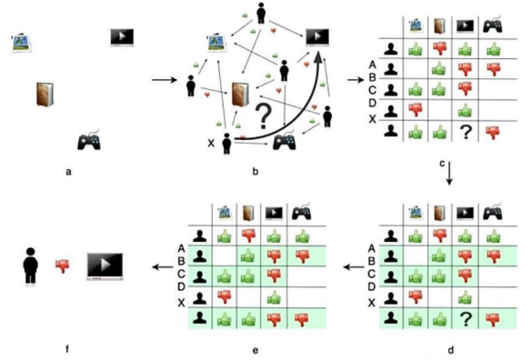

Introduction to Opportunities
This webpage intends to cover the many opportunities provided for society by the integration of recommendation algorithms within highly used digital systems, with an additional focus on how these algorithms have an impact on adolescents who interact with them regularly.
Increased Relevant Content Exposure
One of the most prominent opportunities for society regarding the integration of recommendation algorithms within digital systems is their profound ability to recommend and expose users to more relevant content than before. The content recommendations provided by these algorithms is based on the user’s interaction with previous content which kept them interested, entertained, amused or curious. This type of scenario is likely to happen on social media platforms such as Instagram, Tik Tok and YouTube among many others.
Previous studies have shown that these platforms in particular all have their own uniquely tailored recommendation algorithms to assist them in achieving their respective goals of retaining the user’s attention. They do this by incorporating features which allow for algorithmically tailored, relevant content exposure. These features include endless scrolling, follow-up suggestions for which videos to watch next, and cherry-picked content presentation with the incorporation of interactive buttons, which help to further tailor the algorithms to the user’s likes. The incorporation of these algorithm driven features benefits social media platforms’ aim to keep their users interested in spending more time interacting with content they enjoy the most. Thus, leveraging the recommendation algorithms to provide users with content which is most relevant to them is the best possible opportunity for these platforms to take (Koç, 2023, pp. 65-68).
This is a major opportunity for society as it benefits multiple groups of people including the people who created the platforms, the content creators posting on the platforms and the users consuming their recommended content. With the help of the previously mentioned features, the users consuming the content are given a lot of relevant information and media per scroll, as well as subjectively better entertainment, dependent on the user’s taste. Equally, the content creators on these platforms are given more opportunities to make themselves known and easily share their content with more interested users, whether it’d be by algorithmic boosted trends or currently popular topics. The algorithms also heavily impact the creators doing social media related work as their full-time job, as more of their content is exposed to the right audiences, consequently increasing their following and potential revenue. Additionally, the creators of the platforms benefit most from integrating these algorithms, as discussed previously, due to the increased numbers of users spending long periods of time watching relevant content on their platforms, increasing their platforms’ popularity and financial investments (Deshmane & Barriola, 2024).
This is also a major opportunity for adolescents, as they make up a big percentage of these platforms’ users. Teenagers using these platforms are often the ones most impacted by trends, popular opinions and new information surfaces, as the algorithms recommend them relevant content to view. This can create opportunities for teenagers to be inspired to create and explore more relevant content which may educate, inform or amuse them and other adolescent users. As adolescents develop their brains, they learn more about themselves and the world around them. Thus, the opportunities these algorithms provide are a big benefit, as they help expose teenagers to things that might further interest them on social media, helping them build their identity and encourage more self-expression through relevant content exposure, creation and integration.
Greater Business Ventures & Higher Financial Potential
Online shopping websites and e-commerce platforms equally benefit from the integration of recommendation algorithms within their systems. Many opportunities for society arise from the addition of algorithms and their personalisation capabilities within online shopping platforms. The most frequent uses of these algorithms include similar product recommendations, ‘money-saving’ deal suggestions or proposals of additional services users might like. Popular domains like Amazon, AliExpress and Shein exhibit and effectively leverage these algorithms to boost their sales revenue, attract more buyers, obtain more business deals with manufacturers and retain their users’ attention for as long as possible.
Recent studies conducted on the topic of recommendation algorithms within e-commerce platforms convey the algorithms’ complexity, as well as the effort required for exceptional performance. Figure 1 (Xu et al., 2024, p. 4) below showcases a brief overview of how a collaborative filtering algorithm effectively utilises user-item interactions to produce personalised recommendations. Through these interactions, these algorithms filter large amounts of data, ultimately providing predictions users may find useful or likeable. The figure truly highlights the versatility of these algorithms within e-commerce platforms, further emphasising the immense opportunities they provide to society via enhancing online shopping experiences.
Figure 1
Framework of the basic principles of collaborative filtering
Copyright 2024 by Xu et al.
The integration of these recommendation algorithms provides countless opportunities for society. Business owners who work with e-commerce platforms or possess online shopping services obtain an advantage to their competitors by providing a unique shopping experience for each of their users. As specific products get recommended to them based on their shopping patterns, search or viewing history, the algorithms continue to tailor to the user’s potential likes and needs. Because of this, online shoppers are curious to look through what businesses are selling, feeling less intimidated by varying choices of products available. Users then gain further opportunities to not only find what they were looking for but also explore new things that they may wish to purchase and previously didn’t know about, based on the algorithmic recommendations. This in turn leads to higher profit and increased sales for the e-commerce business owners, who also gain customer loyalty and an increase in popularity. The utilisation of algorithms within online shopping experiences can also benefit smaller businesses and help them make a start on their e-commerce journeys, providing opportunities for them to join the market and obtain jobs by doing so.
Implementing these algorithms within e-commerce platforms also presents itself as a big opportunity for adolescents. As established before, teenagers are in a period of their lives where exploring their interests is vital to them as individuals. Because of this, algorithms featured within online shopping platforms aid in their desires for self-expression and creativity, by recommending them products they would potentially like to purchase. This presents a variety of opportunities, as having tailored shopping experiences encourages adolescents to further develop their personalities, likes and dislikes through exploration of things that attract them or help them express themselves. Ranging from fan-based accessories to specific aesthetics decor, the algorithms utilised within shopping services will be able to fulfil the teenagers needs by recommending them products which they will most likely want. In doing so, these algorithms help create pleasant and personalised online shopping experiences for young people, that are convenient, fun and useful (Larano et al., 2023). This may also motivate adolescents to work hard in order to financially obtain the items they wish to purchase, or even inspire entrepreneurship and develop business-related mindsets within them.
Improved Marketing & Targeted Advertising Strategies
The utilisation of algorithmic personalisation provides expansive opportunities within the realms of business marketing campaigns and digital advertising. Many businesses today benefit heavily from the use of diverse recommendation algorithms in order to tailor their advertisements to the right audiences. Whilst business psychology is a big part of what makes a good marketing campaign, studies have shown that the integration of these algorithms within such cases is an immense advantage. Algorithms within these campaigns mostly serve to analyse and carefully curate user data within given digital systems (including search engines, news articles, social networking and online entertainment platforms), resulting in them showcasing algorithmically determined advertisements to targeted audiences who are most likely interested in viewing them. Data-driven, machine learning techniques are applied within these recommendation algorithms, determining appropriate audiences based on their age, known interests, browsing history, digital habits, clicking patterns and frequently viewed online sources (Choi & Lim, 2020).
In the context of globally used digital systems, the usage of such algorithms within digital advertising campaigns provides many opportunities for society as a whole. Studies conducted on the topic showcase that such advertisements enhance relevant interactions between campaign consumers and businesses, further increasing user-engagement and the potential for growth in customer numbers. Implementation of these algorithms in ethical ways gives society opportunity to become more well-informed and connected as a consumer base. Algorithmically tailoring advertisements to individuals’ preferences improves overall satisfaction, by increasing the chances of them discovering products or experiences that meet their genuine interests and needs. Whilst rivalry between businesses may rise due to the effectiveness of these recommendation algorithms, there is also a push to bring more innovation and creativity to the table, in order to attract potential customers and improve their financial metrics (Parasrampuria & Williams, 2023). This also highlights the rise of marketing jobs, to obtain qualified individuals who can aid in the success of personalised advertising campaigns.
Algorithmically personalised advertisements also provide numerous opportunities for adolescents. Whilst many think personalised advertisements may cause materialistic cravings, studies show that ethical advertisements encourage adolescents to discover experiences which are tailored to them and their current interests or lifestyle preferences. This in turn may make them feel more socially accepted, recognised and validated, as the advertisements would reach them on a personal level (Rani, 2023). Be it through advertising a band’s concert or a stylish lifestyle product, seeing such promotions will provide teenagers with a sense of belonging, which is crucial to their overall development. Adolescents may see advertisements for experiences they haven’t had before, which gives them opportunities to go out, try new things and socialise with peers alike. Equally, exposing adolescents to algorithmically tailored advertisements on digital systems they are familiar with also makes them less susceptible to persuasive intentions business may impose on them.
Conclusion to Opportunities
The opportunities for society provided by the integration of recommendation algorithms and their personalisation capabilities are vast and span across multiple sections of the modern digital world. Adolescents come into regular contact with such algorithms and are faced with a variety of opportunities which affect their development in more ways than one. Regardless of which digital systems they are utilised in, recommendation algorithms provide numerous benefits for society and adolescents alike, overall encouraging them to feel inspired, motivated and explore their interests further.
Style modified using Tailwind CSS